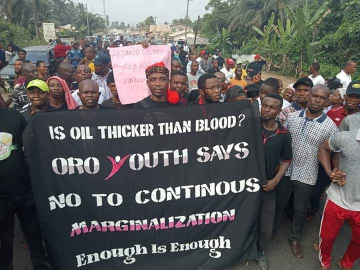
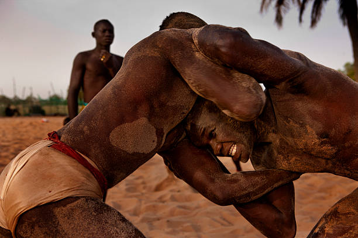

History has it that by 2370 BC Oro also known as (Oro Nation) had already been settled down in the present location known as Akwa Ibom State of Nigeria on the West Coast of African Sub Region, Akwa Ibom Gulf Line to Gulf of Guinea Atlantic Ocean South, after the Great flood (Noah's deluge). The Oron Nation is an ethnic nationality which is said to have migrated from the east through Central Eastern Africa (around the Congos) and through the Southern regions of the Camerouns to present-day area of South-Southern Nigeria. The Oro land and its people consist of 9 Clans called Afaha. These are; Afaha Okpo, Afaha Ukwong, Ebughu, Afaha Ibighi, Effiat, Afaha Ubodung, Etta, Afaha Oki-uso, and Afaha Idua (Ilue). Read More...
ORO NATIONS
Our Destiny: In Our Hands
Residents of Oron, one of the oil-producing local councils in Akwa Ibom, has protested against alleged marginalisation by the state government and the International Oil Companies, IOCs operating in the area. The protesters were drawn from the five council areas of Mbo, Okobo, Udung Uko, Urue Offong-Oruko and Oron, who disrupted economic and other activities in Oron and its environs. The protesters, who were dressed in black, also displayed many placards, including “Is oil thicker than blood? Oro youth say no to continued marginalisation, “Akwa Ibom Government is a threat to peace". Read More...
 LATEST NEWSOJEI BAARI AKPAKIP-ORO!!!
The Oros are peculiar people, strong contenders in nature wherever they are found, with the accolade `Oro Ukpabang Okpo`. Oro man complexion is not reflecting other ethnic nationalities or immigrant somewhere into Oro Nation. Their complexion is not as fair as the Palestinians or of the Israelis nor as dark as people residing around Cameroon mountain when Oro Nation had already came into being after creation of the world, even before pre colonialism came to being, when Nigeria and Cameroon did not come into existence as Countries. Abang was a warrior so powerful with huge muscles, the Head and Chief wrestler known as `Mbok’. The wrestling known as (Mbok) was originated by Abang the warrior from Africa which was displayed by the African slaves after a day`s job, to the admiration of the Guards who watches over them at work thereby creating relaxation chances for them at work before it spread and developed as wrestling around the whole world today. Abang the warrior with his group gallantly fought against the slave masters who were in the area for slave trade business. One day, he was over powered and captured with few of his group and were taken to the present day Israel of what was then Egypt. This is perhaps why it may be more than a mere coincidence that the only two nations on earth with places named “Oron” are Israel and Nigeria.
Read More...
History has it that by 2370 BC Oro also known as (Oro Nation) had already been settled down in the present location known as Akwa Ibom State of Nigeria on the West Coast of African Sub Region, Akwa Ibom Gulf Line to Gulf of Guinea Atlantic Ocean South, after the Great flood (Noah's deluge). The Oron Nation is an ethnic nationality which is said to have migrated from the east through Central Eastern Africa (around the Congos) and through the Southern regions of the Camerouns to present-day area of South-Southern Nigeria. The Oro land and its people consist of 9 Clans called Afaha. These are; Afaha Okpo, Afaha Ukwong, Ebughu, Afaha Ibighi, Effiat, Afaha Ubodung, Etta, Afaha Oki-uso, and Afaha Idua (Ilue). Read More...